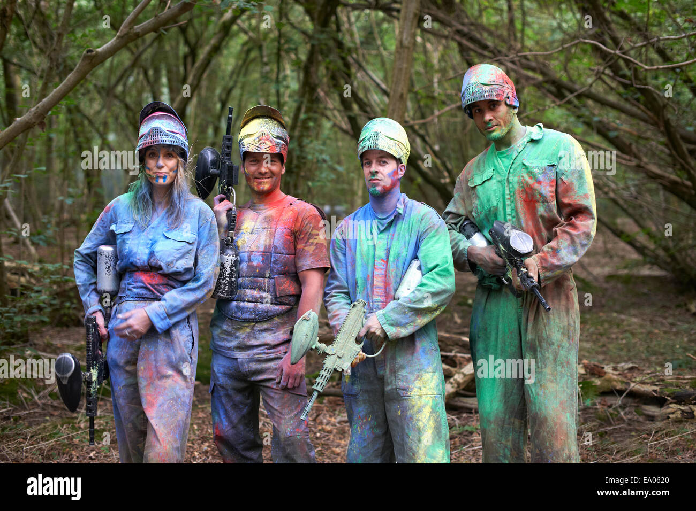
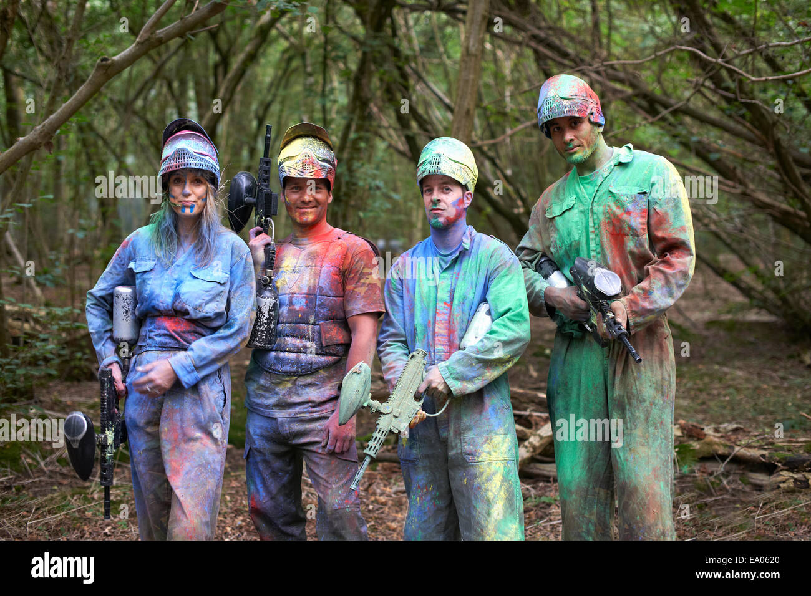

Why colors are the best!
My english teacher made us do a symbolic analysis on colors and what they mean in poetry so they must be important. Also black and white movies are boring.
My english teacher made us do a symbolic analysis on colors and what they mean in poetry so they must be important. Also black and white movies are boring.
Unsere Mission ist es, Farbe in das Leben der Menschen zu bringen. (Und den Regenbogen stehlen)